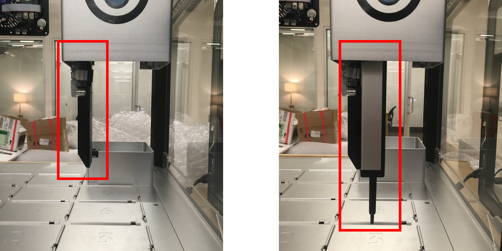
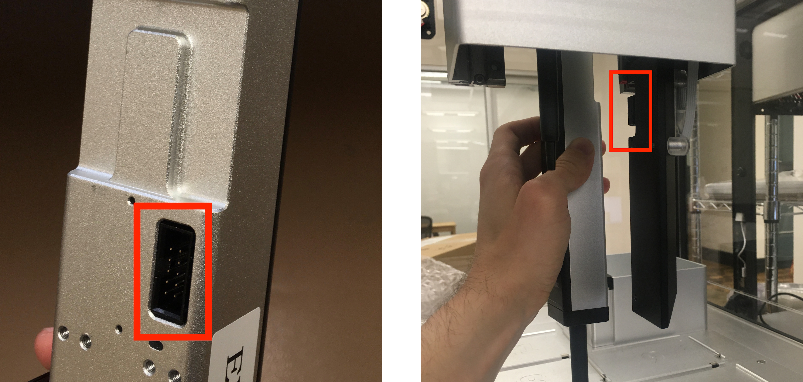
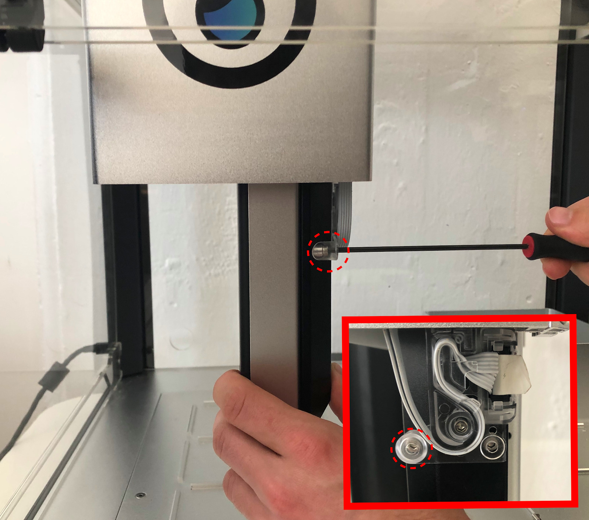
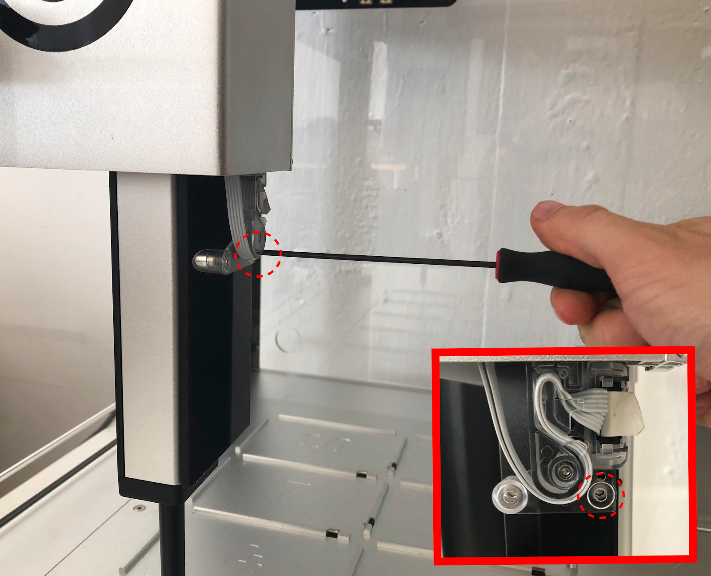
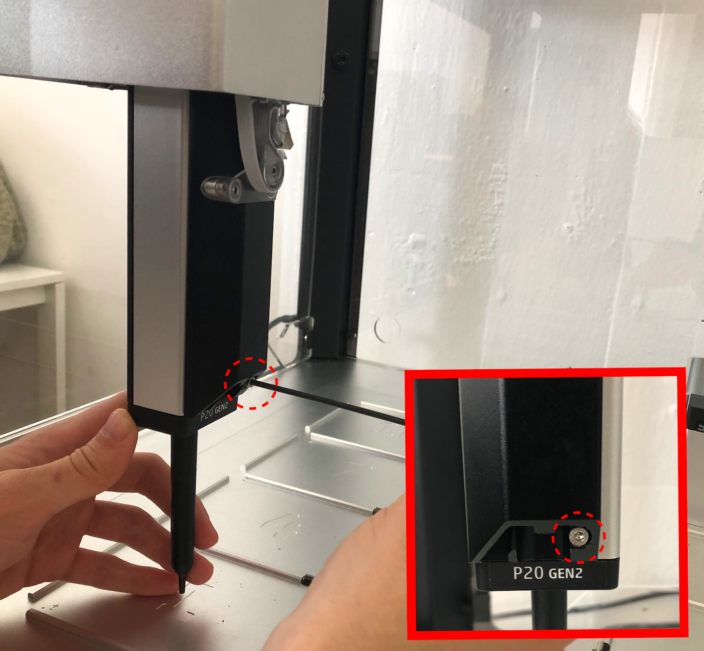
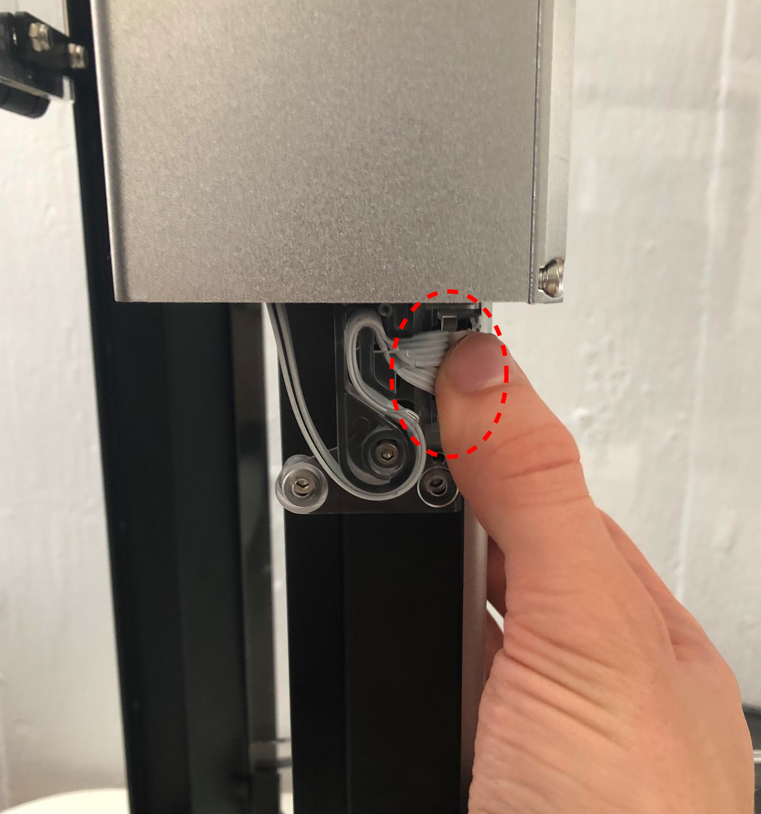
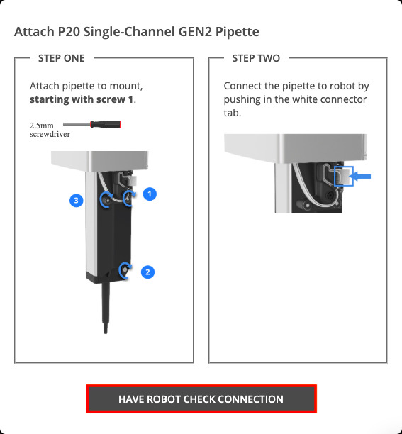

Montaje de pipetas.
Recopilar, para el montaje:
-
Pipetas
En esta sección, se instalarán las pipetas en el OT-2.
El OT-2 tiene dos soportes de pipeta. Cada soporte de pipeta puede sostener una pipeta Opentrons. La pipeta se atornilla al soporte y el OT-2 lo controla eléctricamente a través de un cable.

En la foto: el soporte izquierdo, sin pipeta (izquierda) y con un P300 monocanal GEN2 acoplado (derecha). La montura derecha está levantada y oculta a la vista.
Atención: La pipeta p20 debe estar en la derecha, es necesario para poder recalibrar más tarde.
- Personal necesario
-
-
IN. Técnico de instalación.
-
TL. Técnico de laboratorio
-
- Herramientas/Material necesario
-
-
Destornillador hexagonal de 2,5 m m, incluido en tu OT-2.
-
Bloque de calibración (*)
-
(*) Si va a conectar una pipeta GEN2 de 8 canales, también necesitará su bloque de calibración. El bloque de calibración viene en su propia caja, incluida con su pipeta GEN2 de 8 canales.
- Operaciones/Pasos
| Paso | Herramientas | Detalle, Fotos y/o diagramas |
|---|---|---|
1: Baje el soporte de la pipeta para acceder |
- |
En la aplicación de Opentrons, vaya a la página de Pipetas y Módulos para su OT-2. Seleccione Adjuntar para la montura en la que desea que su pipeta se encienda. El pórtico se moverá hacia la ventana frontal y la montura se bajará.
|
2: Seleccione la pipeta que va a adjuntar |
- |
En el menú desplegable de la aplicación Opentrons, seleccione el modelo de pipeta que desea adjuntar. |
3: Alinee la pipeta con la montura |
- |
Empiece con la pipeta detrás de la montura. Deslice la pipeta hacia usted, manteniéndola vertical. El conector de la pipeta debe coincidir con el conector de la montura. Sabrá que está bien alineada si siente que la pipeta cuelga de una repisa oculta. Sostenga la pipeta en su lugar. Consejo: si tiene problemas, puede ayudar a bajar, de modo que pueda ver la pipeta y la montura desde abajo. De lo contrario, su vista podría quedar bloqueada por la cubierta de la montura de la pipeta.  |
4: Atornille la pipeta en la montura sin apretarla |
- |
Un total de tres tornillos hexagonales de 2,5 mm asegurarán su pipeta a su soporte. Hay dos tornillos superiores y uno inferior. Los dos tornillos superiores están permanentemente incrustados en el plástico transparente de la parte superior del soporte.   El único tornillo inferior debe ser insertado por separado. Hay varios tornillos inferiores, en una pequeña bolsa.  Atornille los tres tornillos, pero déjelos ligeramente sueltos. |
5-a: Si está acoplando una pipeta de 8 canales, nivélela. |
- |
Si está conectando una pipeta monocanal, pase al paso 5-b. Las pipetas de 8 canales son especialmente sensibles a la inclinación. Si va a conectar una, se necesitan algunos pasos adicionales para asegurarse de que está conectada perfectamente recta. (Para obtener más información, consulte Nivelación de las pipetas de 8 canales). Siga las instrucciones del video de la aplicación Opentrons para nivelar su pipeta. ¿Qué pasa si no puedo nivelar la pipeta completamente? Puede tener problemas para nivelar la pipeta perfectamente. Puede que no haya suficiente espacio de maniobra para que los 8 canales toquen la superficie a la vez. O, la pipeta podría retroceder un poco cuando apriete los 3 tornillos. Si la diferencia entre los canales es inferior a 0,15 mm, está lo suficientemente nivelada. (0,15 mm es el grosor de entre una y dos hojas de papel de impresora típico). Si es más de 0,15 mm, y no puede corregirlo, su OT-2 podría necesitar más ajustes. Contacte con el Soporte para obtener ayuda.
|
5-b: Apriete los tres tornillos |
- |
Apriete los tres tornillos de la pipeta. Cuando se aprietan, los tres tornillos deben sentirse firmes. Si se siente que un tornillo sigue girando libremente, está desalineado. Puede que tengas que volver al paso 4 y mover la pipeta para que los 3 tornillos se enrosquen en sus agujeros. |
6: Conectar el cable de la pipeta |
- |
¡Ya casi has terminado! Después de atornillar la pipeta, tendrás que enchufarla. Su OT-2 controlará la pipeta a través de un cable de cinta blanca. Encuentra la lengüeta del conector blanco y presiónala, hacia la pipeta, lo más lejos que puedas. Deberá sentir que se conecta a la pipeta.  |
7: Verificar la conexión de la pipeta |
- |
Tenemos que asegurarnos de que el OT-2 puede comunicarse con la pipeta a través del cable que acabas de enchufar. En la aplicación de Opentrons, seleccione Tener conexión de comprobación de robot. Su OT-2 comprobará la conexión automáticamente. Si todo va bien, verá una marca de verificación verde. Seleccione Salir de la configuración de la pipeta para continuar. ¿No tiene una marca de verificación verde? Si ve un mensaje de error "No se puede detectar la pipeta", vea: Solución de problemas de conexión de la pipeta.  Si todo va bien, verá una marca de verificación verde |


¡Hecho!
¡Has puesto una pipeta en tu OT-2! Seleccione la configuración de la pipeta de salida para seguir adelante. Puede volver a este proceso en cualquier momento para agregar, quitar o intercambiar pipetas.
Si tienen una segunda pipeta, deberán repetir este proceso para esa también.
| Notas |
|---|
Escriba en este espacio las notas e incidencias del proceso
. |
Inventario y documentación
Anote ahora, en la hoja de inventario de la instalación, los siguientes datos:
-
Numero de serie de la pipeta izquierda.
-
Numero de serie de la pipeta derecha.